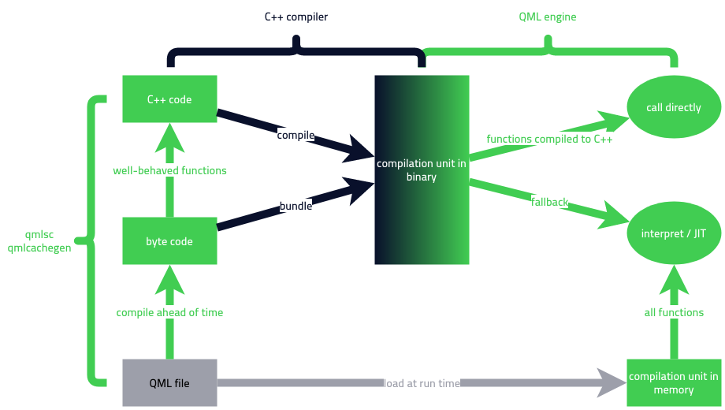

QML script compiler
The QML script compiler compiles functions and expressions in QML and JavaScript files to a byte code that can be interpreted or Just-in-time compiled by the QML engine.
In addition, it compiles some functions and expressions in QML files into C++ code, within limitations set by the nature of JavaScript. It generates C++ code for functions that can be exhaustively analyzed. The following flow chart explains the compilation workflow.

QML script compiler is available in two versions. One is qmlcachegen, which is a part of the Qt Quick Compiler. Another one is qmlsc, which is a part of the commercial-only add-on Qt Quick Compiler Extensions.
qmlcachegen
qmlcachegen uses the meta-object system and generates lookups and stores them in a central place, a compilation unit. The compilation unit contains a representation of document structure, compact byte code representation for each function and expression, and native code for functions and bindings that compiler fully understands. The byte code in a compilation unit can be used by the QML engine to avoid re-compilation and to speed up execution.
qmlsc
qmlsc, on the flip side, extends the base functionality of qmlcachegen by providing two extra modes.
static mode
In static mode, qmlsc assumes that no properties of any types exposed to C++ can be shadowed by derived types. It eliminates the shadow checking mechanism and allows more JavaScript code to be compiled to C++ and eventually generates faster code.
To enable static mode in qmlsc, you should pass --static via QT_QMLCACHEGEN_ARGUMENTS to qt_add_qml_module.
qt_add_qml_module(someTarget
...
)
set_target_properties(someTarget PROPERTIES
QT_QMLCACHEGEN_ARGUMENTS "--static"
)
Warning: qmlsc static-mode generates invalid code if any properties are shadowed in the QML document.
direct mode
In direct mode, qmlsc assumes that all C++ types used in your QML code are available and can be included as C++ headers to the generated code. Then the generated code accesses or modifies properties by directly calling getters, setters and invokable functions in those headers which makes the execution even faster. This means you have to link to private Qt APIs in CMake.
Warning: Private Qt APIs change often. You will need to recompile Qt for each new version.
Warning: If a type is only defined in a plugin or has no header, you can’t use it in direct mode.
To enable direct mode, you should consider the followings:
- you should pass
--direct-callsviaQT_QMLCACHEGEN_ARGUMENTSto qt_add_qml_module.qt_add_qml_module(someTarget ... ) set_target_properties(someTarget PROPERTIES QT_QMLCACHEGEN_ARGUMENTS "--direct-calls" ) - Link all the relavant private Qt modules instead of their public counterparts.
qt_add_qml_module(someTarget ... ) target_link_libraries(someTarget PRIVATE Qt::QmlPrivate Qt::QuickPrivate ... ) - Do not set the
PLUGIN_TARGETto be the same as the backing library target.# direct mode will not function in this setup. qt_add_qml_module(someTarget PLUGIN_TARGET someTarget ... )
Limitations when compiling JavaScript to C++
Many JavaScript constructs cannot be efficiently represented in C++. The QML script compiler skips the C++ code generation for functions that contain such constructs and only generates byte code to be interpreted or run through the Just-in-time compiler. Most common QML expressions are rather simple: value lookups on QObjects, arithmetics, simple if/else or loop constructs. Those can easily be expressed in C++, and doing so makes your application run faster.